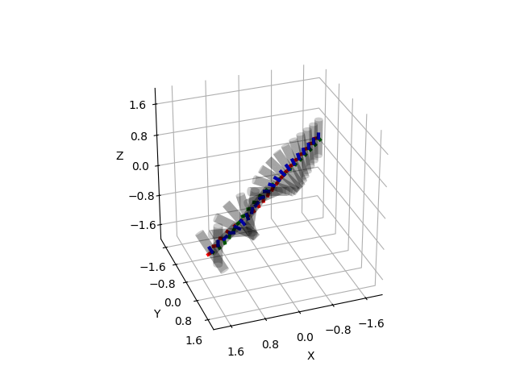

Note
Click here to download the full example code
Rotate Cylinder¶
In this example, we apply a constant torque (tau) to a cylinder at its center of gravity and plot it at several steps during the acceleration.
print(__doc__)
import numpy as np
import matplotlib.pyplot as plt
from pytransform3d.rotations import matrix_from_compact_axis_angle
from pytransform3d.transformations import transform_from, plot_transform
from pytransform3d.plot_utils import plot_cylinder
def inertia_of_cylinder(mass, length, radius):
I_xx = I_yy = 0.25 * mass * radius ** 2 + 1.0 / 12.0 * mass * length ** 2
I_zz = 0.5 * mass * radius ** 2
return np.eye(3) * np.array([I_xx, I_yy, I_zz])
random_state = np.random.RandomState(42)
A2B = np.eye(4)
length = 1.0
radius = 0.1
mass = 1.0
dt = 0.2
inertia = inertia_of_cylinder(mass, length, radius)
tau = np.array([0.05, 0.05, 0.0])
angular_velocity = np.zeros(3)
orientation = np.zeros(3)
ax = None
for p_xy in np.linspace(-2, 2, 21):
A2B = transform_from(R=matrix_from_compact_axis_angle(orientation),
p=np.array([p_xy, p_xy, 0.0]))
ax = plot_cylinder(length=length, radius=radius, A2B=A2B, wireframe=False,
alpha=0.2, ax_s=2.0, ax=ax)
plot_transform(ax=ax, A2B=A2B, s=radius, lw=3)
angular_acceleration = np.linalg.inv(inertia).dot(tau)
angular_velocity += dt * angular_acceleration
orientation += dt * angular_velocity
ax.view_init(elev=30, azim=70)
plt.show()
Total running time of the script: ( 0 minutes 0.202 seconds)